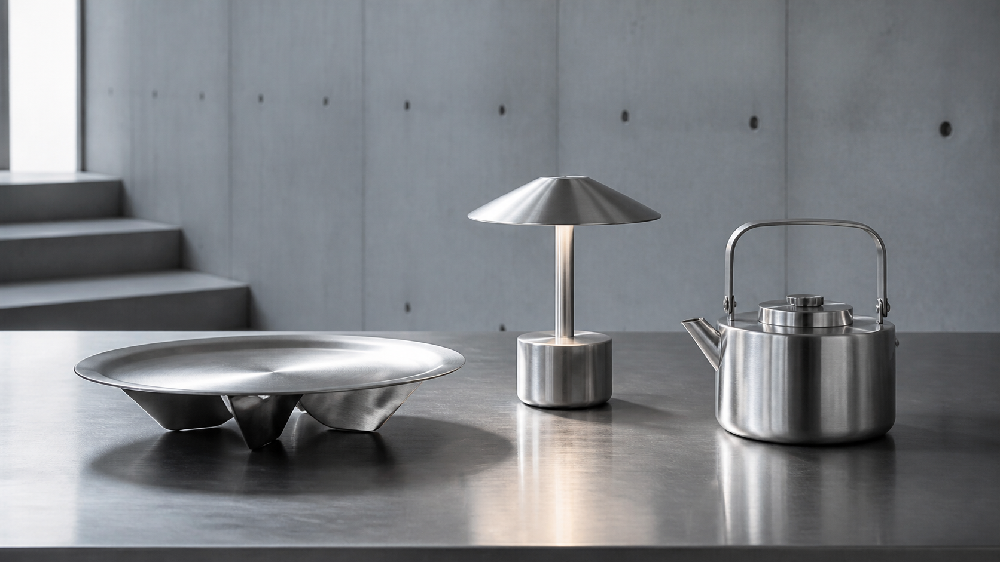

형태
시선을 끌기보다 공간과 자연스럽게 균형을 이루는가.
ABOUT SILVER MOON
실버문은 물건이 사람의 취향과 생활을 조용히 드러낸다고 믿습니다. 형태가 아름답고, 쓰임이 분명하며, 오래 남는 스테인리스 디자인을 찾습니다.

필요한 것을 사는 일에서,
좋아하는 것과 사는 일로.
해외의 작은 상점과 공방, 제조사에서 발견한 좋은 물건을 더 가까이 소개하고 싶어 실버문을 시작했습니다. 아직은 작은 셀렉트숍이지만, 물건 하나를 고르는 기준만큼은 오래 지켜가려 합니다.
새로움보다 오래 남을 이유를 먼저 살핍니다.
시선을 끌기보다 공간과 자연스럽게 균형을 이루는가.
매일 손이 가는 이유와 사용자의 작은 편의가 있는가.
표면의 변화까지 아름답게 받아들이며 오래 쓸 수 있는가.
국내에서 쉽게 만나기 어려운 디자인과 제작자를 살핍니다.
소재, 크기, 마감, 실제 쓰임과 구매 과정을 꼼꼼히 검토합니다.
장점뿐 아니라 알아두어야 할 점까지 투명하게 전합니다.
NEXT COLLECTION